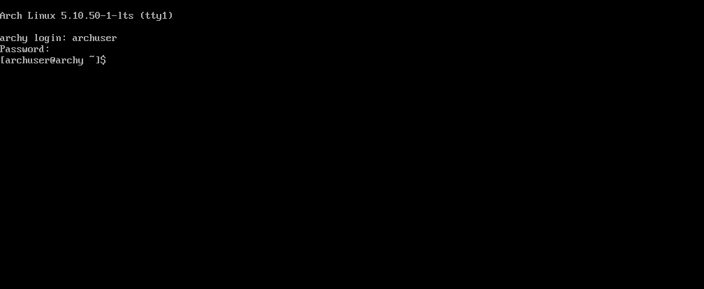

In the last session, we install a very bare minimum Arch Linux in our machine. Now we will install a desktop environment
(DE) in our desktop. We also need to create a non-root user so that he doesn't do any stupid thing accidentally and breaks
his installation.
There are many desktop environments out there in the Linux world. Some of the popular desktop environments are GNOME,
Cinnamon, KDE, Xfce, Mate, Deepin etc. Plus there are a ton of window managers also. Here we will focus on the
Cinnamon desktop environment because it is very user friendly and has almost the same
layout like windows 7 and 10.
It is really a bad idea to constantly work from the root account. Because something can easily get messed up and nightmare can fall. So,
after the login, create a user account. Here I am using my username as archuser.
bash
useradd -m archuser
setting user password
Now create a user password. If you are relatively new in Linux world, it is recommended to use the same password as the root user.
bash
passwd archuser
Use the name you created in the previous step and type your password twice. Be attentive, as
you will see nothing while typing.
adding the user to various groups
Now its time to add the newly created user to many groups. This includes audio, video, optical etc. Otherwise you will miss some
functionalities when we install a graphical user interface.
Next we need to edit the visudo file so that sudo can grant the
new user root privileges.
bash
EDITOR=nano visudo
Activate the search option by pressing the shortcut Ctrl + W and type
# %wheel. Press Enter .
You should jump to the line # %wheel ALL=(ALL) ALL. Uncomment it by removing the # sign. Press
Ctrl + O Enter to save and Ctrl + X .
Enter to exit the editor.
Now reboot the system.
bash
reboot
And log in with the regular user credentials which you have just created.

installing video drivers
Video drivers are needed for good resolution and smooth performance. They come into play if you install Arch Linux in virtualbox. But
first of all, update your system.
bash
sudo pacman -Syu
Now install the necessary video driver.
bash
sudo pacman -S xf86-video-qxl
Since I am doing it in a virtual machine, I chose this package. If you are installing in a hardware with Intel CPU, you need to install
the xf86-video-intel package. In case of AMD CPU, install the xf86-video-amdgpu package.
CAUTION: If you are installing in the computer with intel processor, you probably don't need to install video driver. Because
it can cause the system to freeze.
If you have nvidia graphics drivers, then install these packages:
bash
sudo pacman -S nvidia nvidia-utils
installing display server
Now we need to install the display server. Most two popular display managers are xorg and
wayland. Here we will install xorg. Type:
bash
sudo pacman -S xorg
installing display manager
There are many display managers out there. Popular display managers are gdm, lightdm, sddm etc. Here we will install lightdm display manager.
sudo systemctl enable org.cups.cupsd.service
sudo systemctl enable bluetooth
Now reboot the system.
bash
reboot
final words
If everything is done correctly, you will be presented will lightdm login manager. Give your credentials and press
Log In .
If you followed along and did everything properly than congrats! You successfully installed the cinnamon desktop
environment. Enjoy your new desktop.